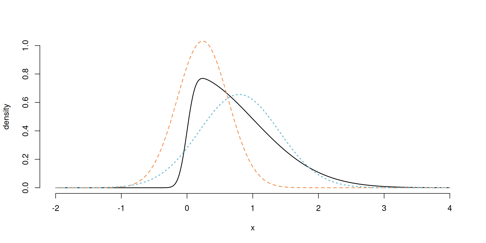
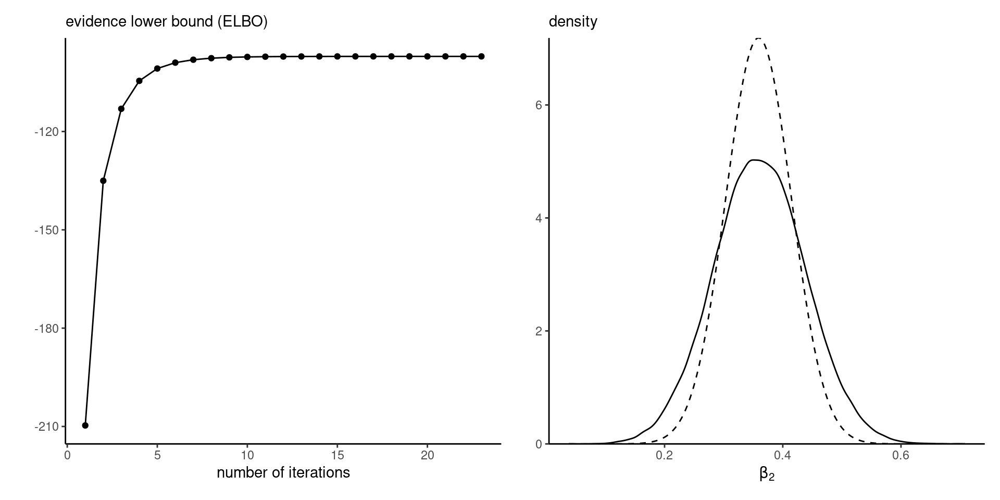

Bayesian modelling
Variational inference
Last compiled Monday Apr 14, 2025
Variational inference
Laplace approximation provides a heuristic for large-sample approximations, but it fails to characterize well \(p(\boldsymbol{\theta} \mid \boldsymbol{y})\).
We consider rather a setting where we approximate \(p\) by another distribution \(g\) which we wish to be close.
The terminology variational is synonym for optimization in this context.
Kullback–Leibler divergence
The Kullback–Leibler divergence between densities \(f_t(\cdot)\) and \(g(\cdot; \boldsymbol{\psi}),\) is \[\begin{align*} \mathsf{KL}(f_t \parallel g) &=\int \log \left(\frac{f_t(\boldsymbol{x})}{g(\boldsymbol{x}; \boldsymbol{\psi})}\right) f_t(\boldsymbol{x}) \mathrm{d} \boldsymbol{x}\\ &= \int \log f_t(\boldsymbol{x}) f_t(\boldsymbol{x}) \mathrm{d} \boldsymbol{x} - \int \log g(\boldsymbol{x}; \boldsymbol{\psi}) f_t(\boldsymbol{x}) \mathrm{d} \boldsymbol{x} \\ &= {\color{#c38f16}{\mathsf{E}_{f_t}\{\log f_t(\boldsymbol{X})\}}} - \mathsf{E}_{f_t}\{\log g(\boldsymbol{X}; \boldsymbol{\psi})\} \end{align*}\] The \({\color{#c38f16}{\text{negative entropy}}}\) does not depend on \(g(\cdot).\)
Model misspecification
- The divergence is strictly positive unless \(g(\cdot; \boldsymbol{\psi}) \equiv f_t(\cdot).\)
- The divergence is not symmetric.
The Kullback–Leibler divergence notion is central to study of model misspecification.
- if we fit \(g(\cdot)\) when data arise from \(f_t,\) the maximum likelihood estimator of the parameters \(\widehat{\boldsymbol{\psi}}\) will be the value of the parameter that minimizes the Kullback–Leibler divergence \(\mathsf{KL}(f_t \parallel g)\).
Marginal likelihood
Consider now the problem of approximating the marginal likelihood, sometimes called the evidence, \[\begin{align*} p(\boldsymbol{y}) = \int_{\boldsymbol{\Theta}} p(\boldsymbol{y}, \boldsymbol{\theta}) \mathrm{d} \boldsymbol{\theta}. \end{align*}\] where we only have the joint \(p(\boldsymbol{y}, \boldsymbol{\theta})\) is the product of the likelihood times the prior.
Approximating the marginal likelihood
Consider \(g(\boldsymbol{\theta};\boldsymbol{\psi})\) with \(\boldsymbol{\psi} \in \mathbb{R}^J\) an approximating density function
- whose integral is one over \(\boldsymbol{\Theta} \subseteq \mathbb{R}^p\) (normalized density)
- whose support is part of that of \(\mathrm{supp} (g) \subseteq \mathrm{supp}(p) = \boldsymbol{\Theta}\) (so KL divergence is not infinite)
Objective: minimize the Kullback–Leibler divergence \[\mathsf{KL}\left\{p(\boldsymbol{\theta} \mid \boldsymbol{y}) \parallel g(\boldsymbol{\theta};\boldsymbol{\psi})\right\}.\]
Problems ahead
Minimizing the Kullback–Leibler divergence is not feasible to evaluate the posterior.
Taking \(f_t = p(\boldsymbol{\theta} \mid \boldsymbol{y})\) is not feasible: we need the marginal likelihood to compute the expectation!
Alternative expression for the marginal likelihood
We consider a different objective to bound the marginal likelihood. Write
\[\begin{align*} p(\boldsymbol{y}) = \int_{\boldsymbol{\Theta}} \frac{p(\boldsymbol{y}, \boldsymbol{\theta})}{g(\boldsymbol{\theta};\boldsymbol{\psi})} g(\boldsymbol{\theta};\boldsymbol{\psi}) \mathrm{d} \boldsymbol{\theta}. \end{align*}\]
Bounding the marginal likelihood
For \(h(x)\) a convex function, Jensen’s inequality implies that \[h\{\mathsf{E}(X)\} \leq \mathsf{E}\{h(X)\},\] and applying this with \(h(x)=-\log(x),\) we get \[\begin{align*} -\log p(\boldsymbol{y}) \leq -\int_{\boldsymbol{\Theta}} \log \left(\frac{p(\boldsymbol{y}, \boldsymbol{\theta})}{g(\boldsymbol{\theta};\boldsymbol{\psi})}\right) g(\boldsymbol{\theta};\boldsymbol{\psi}) \mathrm{d} \boldsymbol{\theta}. \end{align*}\]
Evidence lower bound
We can thus consider the model that minimizes the reverse Kullback–Leibler divergence \[\begin{align*} g(\boldsymbol{\theta}; \widehat{\boldsymbol{\psi}}) = \mathrm{argmin}_{\boldsymbol{\psi}} \mathsf{KL}\{g(\boldsymbol{\theta};\boldsymbol{\psi}) \parallel p(\boldsymbol{\theta} \mid \boldsymbol{y})\}. \end{align*}\]
Since \(p(\boldsymbol{\theta}, \boldsymbol{y}) = p(\boldsymbol{\theta} \mid \boldsymbol{y}) p(\boldsymbol{y})\), \[\begin{align*} \mathsf{KL}\{g(\boldsymbol{\theta};\boldsymbol{\psi}) \parallel p(\boldsymbol{\theta} \mid \boldsymbol{y})\} &= \mathsf{E}_{g}\{\log g(\boldsymbol{\theta})\} - \mathsf{E}_g\{\log p( \boldsymbol{\theta}, \boldsymbol{y})\} \\&\quad+ \log p(\boldsymbol{y}). \end{align*}\]
Evidence lower bound
Instead of minimizing the Kullback–Leibler divergence, we can equivalently maximize the so-called evidence lower bound (ELBO) \[\begin{align*} \mathsf{ELBO}(g) = \mathsf{E}_g\{\log p(\boldsymbol{y}, \boldsymbol{\theta})\} - \mathsf{E}_{g}\{\log g(\boldsymbol{\theta})\} \end{align*}\]
The ELBO is a lower bound for the marginal likelihood because a Kullback–Leibler divergence is non-negative and \[\begin{align*} \log p(\boldsymbol{y}) = \mathsf{ELBO}(g) + \mathsf{KL}\{g(\boldsymbol{\theta};\boldsymbol{\psi}) \parallel p(\boldsymbol{\theta} \mid \boldsymbol{y})\}. \end{align*}\]
Use of ELBO
The idea is that we will approximate the density \[p(\boldsymbol{\theta} \mid \boldsymbol{y}) \approx g(\boldsymbol{\theta}; \widehat{\boldsymbol{\psi}}).\]
- the ELBO can be used for model comparison (but we compare bounds…)
- we can sample from \(q\) as before.
Heuristics of ELBO
Maximize the evidence, subject to a regularization term: \[\begin{align*} \mathsf{ELBO}(g) = \mathsf{E}_g\{\log p(\boldsymbol{y}, \boldsymbol{\theta})\} - \mathsf{E}_{g}\{\log g(\boldsymbol{\theta})\} \end{align*}\]
The ELBO is an objective function comprising:
- the first term will be maximized by taking a distribution placing mass near the MAP of \(p(\boldsymbol{y}, \boldsymbol{\theta}),\)
- the second term can be viewed as a penalty that favours high entropy of the approximating family (higher for distributions which are diffuse).
Laplace vs variational approximation
Figure 1: Skewed density with the Laplace approximation (dashed orange) and variational Gaussian approximation (dotted blue).
Choice of approximating density
In practice, the quality of the approximation depends on the choice of \(g(\cdot; \boldsymbol{\psi}).\)
- We typically want matching support.
- The approximation will be affected by the correlation between posterior components \(\boldsymbol{\theta} \mid \boldsymbol{y}.\)
- Derivations can also be done for \((\boldsymbol{U}, \boldsymbol{\theta})\), where \(\boldsymbol{U}\) are latent variables from a data augmentation scheme.
Factorization
We can consider densities \(g(;\boldsymbol{\psi})\) that factorize into blocks with parameters \(\boldsymbol{\psi}_1, \ldots, \boldsymbol{\psi}_M,\) where \[\begin{align*} g(\boldsymbol{\theta}; \boldsymbol{\psi}) = \prod_{j=1}^M g_j(\boldsymbol{\theta}_j; \boldsymbol{\psi}_j) \end{align*}\] If we assume that each of the \(J\) parameters \(\theta_1, \ldots, \theta_J\) are independent, then we obtain a mean-field approximation.
Maximizing the ELBO one step at a time
\[\begin{align*} \mathsf{ELBO}(g) &= \int \log p(\boldsymbol{y}, \boldsymbol{\theta}) \prod_{j=1}^M g_j(\boldsymbol{\theta}_j)\mathrm{d} \boldsymbol{\theta} \\&\quad- \sum_{j=1}^M \int \log \{ g_j(\boldsymbol{\theta}_j) \} g_j(\boldsymbol{\theta}_j) \mathrm{d} \boldsymbol{\theta}_j \\& \stackrel{\boldsymbol{\theta}_i}{\propto} \mathsf{E}_{i}\left[\mathsf{E}_{-i}\left\{\log p(\boldsymbol{y}, \boldsymbol{\theta})\right\} \right] - \mathsf{E}_i\left[\log \{ g_i(\boldsymbol{\theta}_i) \}\right] \end{align*}\] which is the negative of a Kullback–Leibler divergence.
Optimal choice of approximating density
The maximum possible value of zero for the KL is attained when \[\log \{ g_i(\boldsymbol{\theta}_i) \} = \mathsf{E}_{-i}\left\{\log p(\boldsymbol{y}, \boldsymbol{\theta})\right\}.\] The choice of marginal \(g_i\) that maximizes the ELBO is \[\begin{align*} g^{\star}_i(\boldsymbol{\theta}_i) \propto \exp \left[ \mathsf{E}_{-i}\left\{\log p(\boldsymbol{y}, \boldsymbol{\theta})\right\}\right]. \end{align*}\] Often, we look at the kernel of \(g^{\star}_j\) to deduce the normalizing constant.
Coordinate-ascent variational inference (CAVI)
- We can maximize \(g^{\star}_j\) in turn for each \(j=1, \ldots, M\) treating the other parameters as fixed.
- This scheme is guaranteed to monotonically increase the ELBO until convergence to a local maximum.
- Convergence: monitor ELBO and stop when the change is lower then some present numerical tolerance.
- The approximation may have multiple local optima: perform random initializations and keep the best one.
Example of CAVI mean-field for Gaussian target
We consider the example from Section 2.2.2 of Ormerod & Wand (2010) for approximation of a Gaussian distribution, with \[\begin{align*} Y_i &\sim \mathsf{Gauss}(\mu, \tau^{-1}), \qquad i =1, \ldots, n;\\ \mu &\sim \mathsf{Gauss}\{\mu_0, (\tau\tau_0)^{-1}\} \\ \tau &\sim \mathsf{gamma}(a_0, b_0). \end{align*}\] This is an example where the full posterior is available in closed-form, so we can compare our approximation with the truth.
Variational approximation to Gaussian — mean
We assume a factorization of the variational approximation \(g_\mu(\mu)g_\tau(\tau);\) the factor for \(g_\mu\) is proportional to \[\begin{align*} \log g^{\star}_{\mu}(\mu) \propto -\frac{\mathsf{E}_{\tau}(\tau)}{2} \left\{ \sum_{i=1}^n (y_i-\mu)^2-\frac{\tau_0}{2}(\mu-\mu_0)^2\right\}, \end{align*}\] which is quadratic in \(\mu\) and thus must be Gaussian with precision \(\tau_n = \mathsf{E}_{\tau}(\tau)(\tau_0 + n)\) and mean \(\tau_0\mu_0 +n\overline{y}.\)
Variational approximation to Gaussian — precision
The optimal precision factor satisfies \[\begin{align*} \ln g^{\star}_{\tau}(\tau) &\propto \log \tau\left(\frac{n+1}{2} + a_0-1\right) \\&\quad- \tau {\color{#c38f16}{\left[b_0 + \frac{\mathsf{E}_{\mu}\left\{\sum_{i=1}^n (y_i-\mu)^2\right\}}{2} + \frac{\tau_0\mathsf{E}{\mu}\left\{(\mu-\mu_0)^2\right\}}{2}\right]}}. \end{align*}\] Thus a gamma with shape \(a_n =a_0 +n/2\) and rate \({\color{#c38f16}{b_n}}\).
Rate of the gamma for \(g_\tau\)
It is helpful to rewrite the expected value as \[\begin{align*} \mathsf{E}_{\mu}\left\{\sum_{i=1}^n (y_i-\mu)^2\right\} = \sum_{i=1}^n \{y_i - \mathsf{E}_{\mu}(\mu)\}^2 + n \mathsf{Var}_{\mu}(\mu), \end{align*}\] so that it depends on the parameters of the distribution of \(\mu\) directly.
CAVI for Gaussian
The algorithm cycles through the following updates until convergence:
- \(\mathsf{Va}_{\mu}(\mu) = \{\mathsf{E}_{\tau}(\tau)(\tau_0 + n )\}^{-1},\)
- \(\mathsf{E}_{\mu}(\mu) = \mathsf{Va}_{\mu}(\mu)\{\tau_0\mu_0 + n \overline{y}\},\)
- \(\mathsf{E}_{\tau}(\tau) = a_n/b_n\) where \(b_n\) is a function of both \(\mathsf{E}_{\mu}(\mu)\) and \(\mathsf{Var}_{\mu}(\mu).\)
We only compute the ELBO at the end of each cycle.
Maximization?
Recall that alternating these steps is equivalent to maximization of the ELBO.
- each iteration performs conditional optimization implicitly (as we minimize the reverse KL divergence).
Monitoring convergence
The derivation of the ELBO is straightforward but tedious; \[\begin{align*} \mathsf{ELBO}(g) & = a_0\log(b_0) -a_n\log b_n + \log \{\Gamma(a_n)/\Gamma(a_0)\} \\& \quad - \frac{n}{2}\log(2\pi)+ \frac{1 + \log (\tau_0/\tau_n)}{2}. \end{align*}\]
We can also consider relative changes in parameter values as tolerance criterion.
Bivariate posterior density
Figure 2: Bivariate density posterior for the conjugate Gaussian-gamma model (left) and CAVI approximation (right).
Marginal posterior densities
Figure 3: Marginal posterior density of the mean and precision of the Gaussian (full line), with CAVI approximation (dashed).
CAVI for probit regression
A probit regression is a generalized linear model with probability of success \(\Phi(\mathbf{x}_i\boldsymbol{\beta}),\) where \(\Phi(\cdot)\) is the cumulative distribution function of a standard Gaussian variable.
We can write the model as \[\begin{align*} p(\boldsymbol{y} \mid \boldsymbol{\beta}) = \Phi(\mathbf{X}\boldsymbol{\beta})^{\boldsymbol{y}}\Phi(-\mathbf{X}\boldsymbol{\beta})^{\boldsymbol{1}_n -\boldsymbol{y}} \end{align*}\] since \(1-\Phi(x) = \Phi(-x).\)
Data augmentation and CAVI
Consider data augmentation with auxiliary variables \(Z_i \mid \boldsymbol{\beta}\sim \mathsf{Gauss}(\mathbf{x}_i\boldsymbol{\beta}, 1).\)
With \(\boldsymbol{\beta} \sim \mathsf{Gauss}_p(\boldsymbol{\mu}_0, \mathbf{Q}_0^{-1}),\) the model admits conditionals \[\begin{align*} \boldsymbol{\beta} \mid \boldsymbol{Z} &\sim \mathsf{Gauss}_p\left\{\mathbf{Q}_{\boldsymbol{\beta}}^{-1}(\mathbf{X}\boldsymbol{Z} + \mathbf{Q}_0\boldsymbol{\mu}_0), \mathbf{Q}_{\boldsymbol{\beta}}^{-1} \right\} \\ Z_i \mid y_i, \boldsymbol{\beta} &\sim \mathsf{trunc. Gauss}(\mathbf{x}_i\boldsymbol{\beta}, 1, l_i, u_i) \end{align*}\] where \(\mathbf{Q}_{\boldsymbol{\beta}}= \mathbf{X}^\top\mathbf{X} + \mathbf{Q_0},\) and \([l_i, u_i]\) is \((-\infty,0)\) if \(y_i=0\) and \((0, \infty)\) if \(y_i=1.\)
CAVI factorization for probit model
If we consider a factorization of the form \[g_{\boldsymbol{Z}}(\boldsymbol{z})g_{\boldsymbol{\beta}}(\boldsymbol{\beta}),\] then we exploit the conditionals in the same way as for Gibbs sampling, but substituting unknown parameter functionals by their expectations.
Furthermore, the optimal form of the density further factorizes as \[g_{\boldsymbol{Z}}(\boldsymbol{z}) = \prod_{i=1}^n g_{Z_i}(z_i).\]
Updates for CAVI - probit regression
The model depends on
- \(\mu_{\boldsymbol{Z}}\), the mean parameter of \(\boldsymbol{Z}\)
- \(\mu_{\boldsymbol{\beta}},\) the mean of \(\boldsymbol{\beta}.\)
Consider the terms in the posterior proportional to \(Z_i\), where \[\begin{align*} p(z_i \mid \boldsymbol{\beta}, y_i) \propto -\frac{z_i^2 - 2z_i \mathbf{x}_i\boldsymbol{\beta}}{2} \times \mathrm{I}(z_i >0)^{y_i}\mathrm{I}(z_i <0)^{1-y_i} \end{align*}\] which is linear in \(\boldsymbol{\beta}\).
Truncated Gaussian
The expectation of a univariate truncated Gaussian \(Z \sim \mathsf{trunc. Gauss}(\mu,\sigma^2, l, u)\) is \[\begin{align*} \mathsf{E}(Z) = \mu - \sigma\frac{\phi\{(u-\mu/\sigma)\} - \phi\{(l-\mu/\sigma)\}}{\Phi\{(u-\mu/\sigma)\} - \Phi\{(l-\mu/\sigma)\}}. \end{align*}\]
Update for CAVI
If we replace \(\mu=\mathbf{x}_i\mu_{\boldsymbol{\beta}}\), we get the update \[\begin{align*} \mu_{Z_i}(z_i) = \begin{cases} \mathbf{x}_i\mu_{\boldsymbol{\beta}} - \frac{ \phi(\mathbf{x}_i\mu_{\boldsymbol{\beta}})}{1-\Phi(\mathbf{x}_i\mu_{\boldsymbol{\beta}})} & y_i = 0;\\ \mathbf{x}_i\mu_{\boldsymbol{\beta}} + \frac{ \phi(\mathbf{x}_i\mu_{\boldsymbol{\beta}})}{\Phi(\mathbf{x}_i\mu_{\boldsymbol{\beta}})} & y_i = 1, \end{cases} \end{align*}\] since \(\phi(x)=\phi(-x).\)
Update for regression parameters
The optimal form for \(\boldsymbol{\beta}\) is Gaussian and proceeding similarly, \[\begin{align*} \boldsymbol{\mu}_{\boldsymbol{\beta}} = (\mathbf{X}^\top\mathbf{X} + \mathbf{Q_0})^{-1}(\mathbf{X}\boldsymbol{\mu}_{\boldsymbol{Z}} + \mathbf{Q}_0\boldsymbol{\mu}_0) \end{align*}\]
Example
We consider for illustration purposes data from Experiment 2 of Duke & Amir (2023) on the effect of sequential decisions and purchasing formats.
- We fit a model with age of the participant and the binary variable
format, which indicate the experimental condition.
ELBO and marginal density approximation
Figure 4: ELBO (left) and marginal density approximation with true density (full) versus variational approximation (dashed).
Stochastic optimization
We consider alternative numeric schemes which rely on stochastic optimization (Hoffman et al., 2013).
The key idea behind these methods is that
- we can use gradient-based algorithms,
- and approximate the expectations with respect to \(g\) by drawing samples from it
Also allows for minibatch (random subset) selection to reduce computational costs in large samples
Black-box variational inference
Ranganath et al. (2014) shows that the gradient of the ELBO reduces to \[\begin{align*} \frac{\partial}{\partial \boldsymbol{\psi}} \mathsf{ELBO}(g) &=\mathsf{E}_{g}\left\{\frac{\partial \log g(\boldsymbol{\theta}; \boldsymbol{\psi})}{\partial \boldsymbol{\psi}} \times \log \left( \frac{p(\boldsymbol{\theta}, \boldsymbol{y})}{g(\boldsymbol{\theta}; \boldsymbol{\psi})}\right)\right\} \end{align*}\] using the change rule, differentiation under the integral sign (dominated convergence theorem) and the identity \[\begin{align*} \frac{\partial \log g(\boldsymbol{\theta}; \boldsymbol{\psi})}{\partial \boldsymbol{\psi}} g(\boldsymbol{\theta}; \boldsymbol{\psi}) = \frac{\partial g(\boldsymbol{\theta}; \boldsymbol{\psi})}{\partial \boldsymbol{\psi}} \end{align*}\]
Black-box variational inference in practice
- Note that the gradient simplifies for \(g_i\) in exponential families (covariance of sufficient statistic with \(\log(p/g)\)).
- The gradient estimator is particularly noisy, so Ranganath et al. (2014) provide two methods to reduce the variance of this expression using control variates and Rao–Blackwellization.
Automatic differentiation variational inference
Kucukelbir et al. (2017) proposes a stochastic gradient algorithm, but with two main innovations.
- The first is the general use of Gaussian approximating densities for factorized density, with parameter transformations to map from the support of \(T: \boldsymbol{\Theta} \mapsto \mathbb{R}^p\) via \(T(\boldsymbol{\theta})=\boldsymbol{\zeta}.\)
- The second is to use the resulting location-scale family to obtain an alternative form of the gradient.
Gaussian full-rank approximation
Consider an approximation \(g(\boldsymbol{\zeta}; \boldsymbol{\psi})\) where \(\boldsymbol{\psi}\) consists of
- mean parameters \(\boldsymbol{\mu}\) and
- covariance \(\boldsymbol{\Sigma}\), parametrized through a Cholesky decomposition
The full approximation is of course more flexible when the transformed parameters \(\boldsymbol{\zeta}\) are correlated, but is more expensive to compute than the mean-field approximation.
Change of variable
The change of variable introduces a Jacobian term \(\mathbf{J}_{T^{-1}}(\boldsymbol{\zeta})\) for the approximation to the density \(p(\boldsymbol{\theta}, \boldsymbol{y})\), where
\[\begin{align*} p(\boldsymbol{\theta}, \boldsymbol{y}) = p(\boldsymbol{\zeta}, \boldsymbol{y}) \left|\mathbf{J}_{T^{-1}}(\boldsymbol{\zeta})\right| \end{align*}\]
Gaussian entropy
The entropy of the multivariate Gaussian with mean \(\boldsymbol{\mu}\) and covariance \(\boldsymbol{\Sigma} = \mathbf{LL}^\top\), where \(\mathbf{L}\) is a lower triangular matrix, is \[\begin{align*} \mathcal{E}(\mathbf{L}) = - \mathsf{E}_g(\log g) &= \frac{D+D\log(2\pi) + \log |\mathbf{LL}^\top|}{2}, \end{align*}\] and only depends on \(\boldsymbol{\Sigma}\).
ELBO with Gaussian approximation
Since the Gaussian is a location-scale family, we can rewrite the model in terms of a standardized Gaussian variable \(\boldsymbol{Z}\sim \mathsf{Gauss}_p(\boldsymbol{0}_p, \mathbf{I}_p)\) where \(\boldsymbol{\zeta} = \boldsymbol{\mu} + \mathbf{L}\boldsymbol{Z}\) (this transformation has unit Jacobian).
The ELBO with the transformation becomes \[\begin{align*} \mathsf{E}_{\boldsymbol{Z}}\left[ \log p\{\boldsymbol{y}, T^{-1}(\boldsymbol{\zeta})\} + \log \left|\mathbf{J}_{T^{-1}}(\boldsymbol{\zeta})\right|\right] + \mathcal{E}(\mathbf{L}). \end{align*}\]
Chain rule
If \(\boldsymbol{\theta} = T^{-1}(\boldsymbol{\zeta})\) and \(\boldsymbol{\zeta} = \boldsymbol{\mu} + \mathbf{L}\boldsymbol{z},\) we have for \(\boldsymbol{\psi}\) equal to either \(\boldsymbol{\mu}\) or \(\mathbf{L}\), using the chain rule, \[\begin{align*} & \frac{\partial}{\partial \boldsymbol{\psi}}\log p(\boldsymbol{y}, \boldsymbol{\theta}) \\&\quad = \frac{\partial \log p(\boldsymbol{y}, \boldsymbol{\theta})}{\partial \boldsymbol{\theta}} \times \frac{\partial T^{-1}(\boldsymbol{\zeta})}{\partial \boldsymbol{\zeta}} \times \frac{\partial (\boldsymbol{\mu} + \mathbf{L}\boldsymbol{z})}{\partial \boldsymbol{\psi}} \end{align*}\]
Gradients for ADVI
The gradients of the ELBO with respect to the mean and variance are \[\begin{align*} \nabla_{\boldsymbol{\mu}} &= \mathsf{E}_{\boldsymbol{Z}}\left\{\frac{\partial \log p(\boldsymbol{y}, \boldsymbol{\theta})}{\partial \boldsymbol{\theta}} \frac{\partial T^{-1}(\boldsymbol{\zeta})}{\partial \boldsymbol{\zeta}} + \frac{\partial \log \left|\mathbf{J}_{T^{-1}}(\boldsymbol{\zeta})\right|}{\partial \boldsymbol{\zeta}}\right\} \\ \nabla_{\mathbf{L}} &= \mathsf{E}_{\boldsymbol{Z}}\left[\left\{\frac{\partial \log p(\boldsymbol{y}, \boldsymbol{\theta})}{\partial \boldsymbol{\theta}} \frac{\partial T^{-1}(\boldsymbol{\zeta})}{\partial \boldsymbol{\zeta}} + \frac{\partial \log \left|\mathbf{J}_{T^{-1}}(\boldsymbol{\zeta})\right|}{\partial \boldsymbol{\zeta}}\right\}\boldsymbol{Z}^\top\right] + \mathbf{L}^{-\top}. \end{align*}\] and we can approximate the expectation by drawing standard Gaussian samples \(\boldsymbol{Z}_1, \ldots, \boldsymbol{Z}_B.\)
Quality of approximation
Consider the stochastic volatility model.
Fitting HMC-NUTS to the exchange rate data takes 156 seconds for 10K iterations, vs 2 seconds for the mean-field approximation.
References

Comments
With vague priors, the coefficients for the mean \(\boldsymbol{\mu}_{\boldsymbol{\beta}}=(\beta_0, \beta_1, \beta_2)^\top\) matches the frequentist point estimates of the probit regression to four significant digits.
Convergence is very fast, as shown by the ELBO plot.
The marginal density approximations are underdispersed.